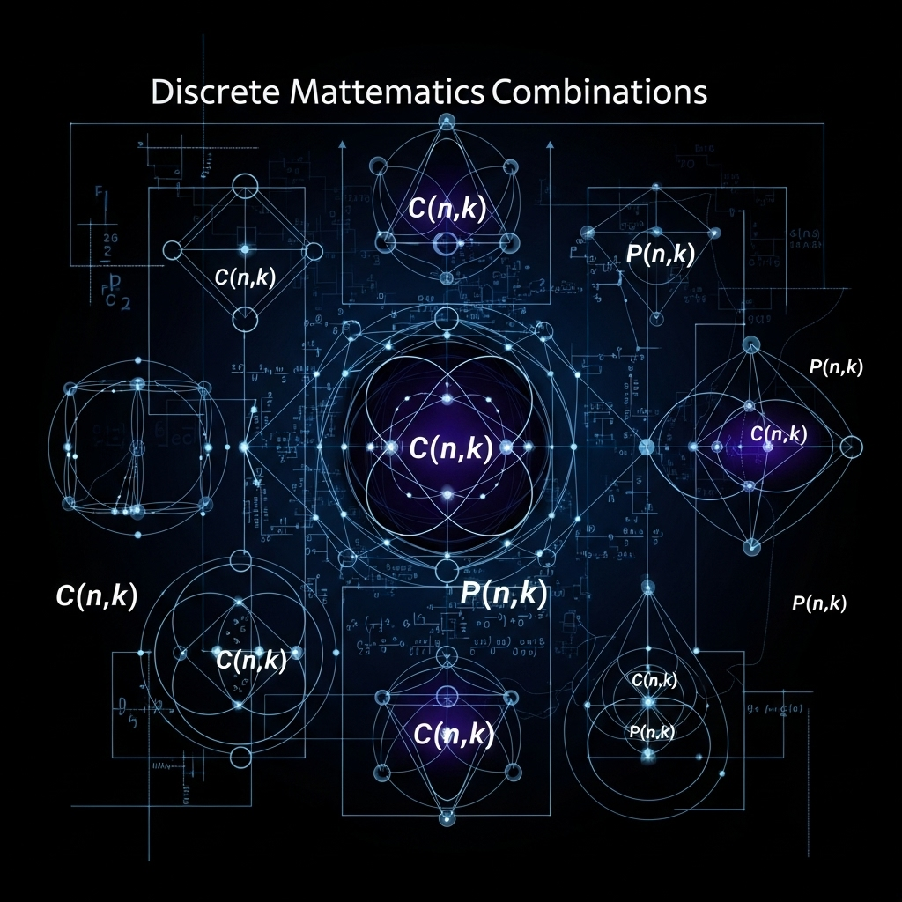

PRINCIPIO FUNDAMENTAL DEL CONTEO
Es una regla que permite calcular el número total de formas en que pueden ocurrir varios eventos sucesivos. Si un evento puede ocurrir de m maneras y otro de n maneras, entonces ambos pueden ocurrir en m × n formas.

COMBINACIONES
Son selecciones de elementos de un conjunto donde el orden no importa. Ejemplo: elegir 3 frutas entre 5 disponibles, sin importar el orden en que se elijan.